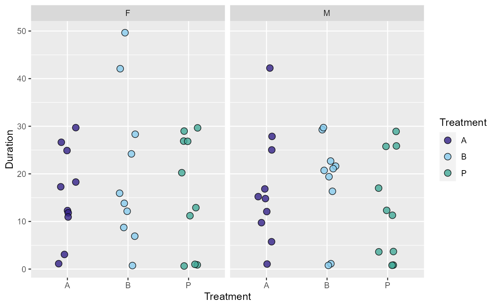
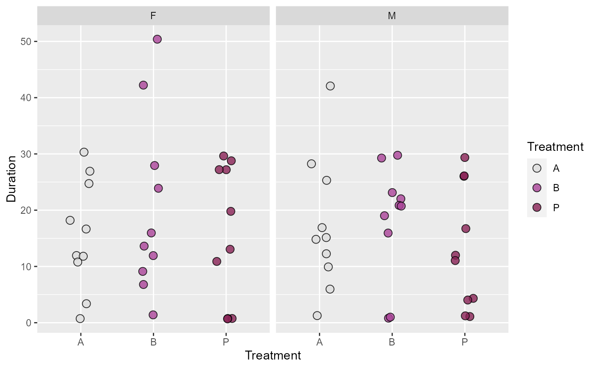
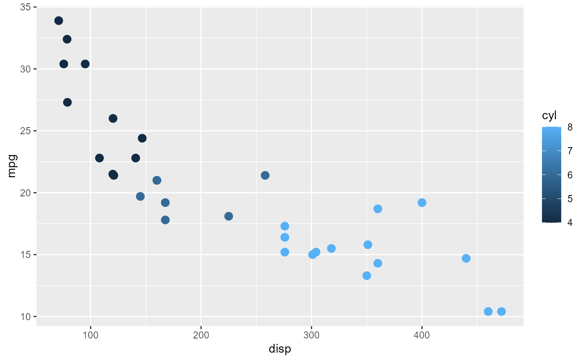

These let you apply grafify discrete or continuous palettes as fill or colour aesthetics to any ggplot2 (scale_color_ spelling is also accepted).
scale_fill_grafify(
palette = "okabe_ito",
ColSeq = TRUE,
reverse = FALSE,
discrete = TRUE,
...
)Name of the grafify palettes from above, provide within quotes. Default discrete palette is okabe_ito. For quantitative palette, set discrete = FALSE (which will apply blue_conti unless another palette is chosen).
logical TRUE or FALSE. Default TRUE for sequential colours from chosen palette. Set to FALSE for distant colours.
Whether the colour order should be reversed.
not used.
Additional parameters for scale_fill or scale_colour.
ggplot scale_fill function for discrete colours.
The default is palette = "okabe_ito". The discrete argument is not used at present. The following discrete and quantitative palettes can be used.
Categorical/discreet palettes:
okabe_ito (default)
bright
contrast
dark
kelly
light
muted
pale
r4
safe
vibrant
By default, sequential colours from above palettes will be chosen. To choose the most distant colours set ColSeq = TRUE.
Sequential quantitative palettes:
grey_conti
blue_conti
yellow_conti
Divergent quantitative palettes:
OrBl_div
PrGn_div
#add a grafify fill scheme to ggplot
ggplot(emmeans::neuralgia, aes(x = Treatment,
y = Duration))+
geom_boxplot(aes(fill = Treatment),
alpha = .6)+
geom_point(aes(colour = Treatment,
shape = Treatment),
size = 3)+
scale_fill_grafify(palette = "bright")+
scale_colour_grafify(palette = "bright")+
facet_wrap("Sex")+
theme_classic()

#distant colours `ColSeq = FALSE`
ggplot(emmeans::neuralgia, aes(x = Treatment,
y = Duration))+
geom_boxplot(aes(fill = Treatment),
alpha = .6)+
geom_point(aes(colour = Treatment,
shape = Treatment),
size = 3)+
scale_fill_grafify(palette = "bright",
ColSeq = FALSE)+
scale_colour_grafify(palette = "bright",
ColSeq = FALSE)+
facet_wrap("Sex")+
theme_classic()

#quantitative colour schemes
ggplot(mtcars, aes(x = disp,
y = mpg))+
geom_point(aes(colour = cyl),
size = 3)+
scale_colour_grafify(palette = "blue_conti")
